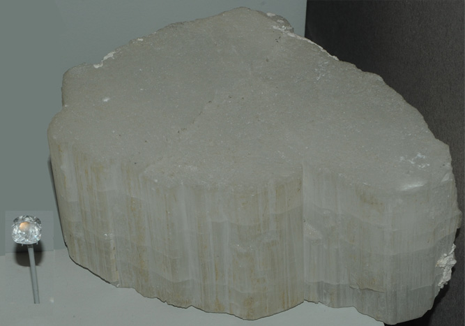

|

| NaBePO4
These samples of beryllonite are displayed in the Smithsonian Museum of Natural History. Beryllonite is a phosphate mineral of beryllium with the composition NaBePO4. The sample at left is about 20x5 cm across and is from Poprok, Kunar, Nuristan, Afghanistan. The gem is to the same scale and is 5 carats.
|